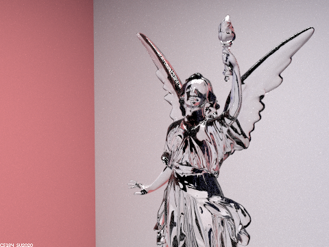
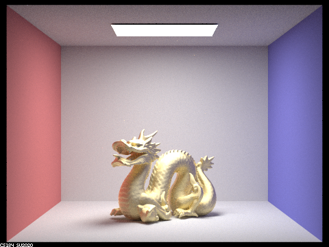
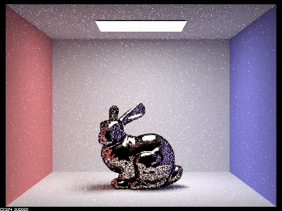
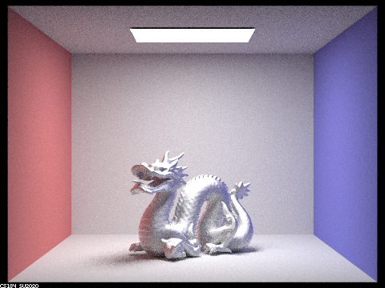

In this project we added new BRDFs to the ray-tracing structure we completed in project 3-1. I decided to complete parts 1 and 2 of this assignment, implementing mirror and glass materials as well as the microfacet BRDF. It was fun to work with refraction and refraction together, and the results were interesting and pretty!
In this section, we implemented two new BSDF behaviors: reflecting and refracting. Using only reflection as our BRDF gets us a mirrored surface, while refracting imitates a the light-bending action of a lens or body of water. We can combine these two behaviors to create a third new material type: glass. Glass both reflects and refracts light. This properties can be modeled stochastically using Schlick's approximation of the Fresnel factor. We will reflect light a certain portion of the time, and refract it the other portion. Next, we will look at how the light travels through glass objects by gradually increasing the maximum depth of our ray-tracing model.
With no bounces, we only display light that is directly from the source.
After one bounce, we get a flat-lighting representation of the room, along with black spheres. These spheres have no color of their own. Since they only reflect or refract light, and we limit the depth of ray bounces to 1, they can only display the reflection of light that has not bounced yet (light from the source). The ceiling is completely dark, since there is not direct path from the light source to the ceiling. It won't light up until we allow more ray reflections.
With two bounces, we can start to see some reflection and refraction in action. We see the flat-lit room from the previous render reflected in the left ball, which has a mirrored surface. The glass ball is still mostly dark, but it does have some dim reflections. Notice that the reflected image of each ball is still completely black. They are reflecting the scene from the previous render, which had completely dark spheres. The spheres' shadows are not as dark as the previous render, because they reflect some light now. The ceiling is now lit, but the ceiling that is reflected on the surface of the spheres is still dark.
The glass sphere on the right has begun refracting some light. When light is refracted through the sphere, it must enter into the sphere on one end and exit out of the other. Our maximum ray depth is now large enough to allow light to pass through both sides of the sphere. The ceiling on the reflected image of the mirror sphere is no longer dark, but the image of the glass sphere is still pretty dark. The glass ball has begun to focus some light onto the surface below it, lighting it up brightly.
We begin to see a light spot on the blue wall to the right of the glass sphere. The sphere is acting like a lens, focusing light from the source onto this point. The glass sphere appears more transparent now. Also, the reflected image of the glass ball on the mirror ball is no longer dark. The bright spot underneath the glass ball is brighter and more intense. The shadow underneath the mirror ball is slightly less dark.
This image has only minimal changes from the previous one. The glass ball appears a little bit brighter, and the bright spot beneath it is even more intense. The shadow beneath this ball is a little bit smoother, but not by much. The image of the glass ball as reflected on the mirror ball is also a bit brighter and more transparent than it used to be.
Here's a hi-res render of the glass lucy statue, taken with 1024 samples per pixel, 16 samples per light, and a maximum ray depth of 7. Next to it is a lower-res \shot taken from a different angle. Some students posted their gorgeously colorful results on Piazza, and mine looks a bit more dull than theirs, but it still looks like glass. Perhaps applying some microfacet magic to this can make it even prettier!
|  |
In this section, we implemented the Microfacet model of reflection. This model assumes a surface that is not perfectly smooth, quanitfying roughness with the 'alpha' coefficient. The rougher a material is, the more diffusely it will reflect light. We implement this through the mircofacet BRDF, which includes the nornal distribution function (NDF), the Fresnel term, the shadow-masking term. We perform importance sampling as well to increase efficiency.
Let's look at how the image changes as we vary alpha. All renders used 256 samples per pixel, 4 samples per light, and a max ray depth of 7.
|
|
|
|
|

|
At low values of alpha, the surface appears glossy, and reflects a lot of light. As alpha increases, the surface becomes more matte, appearing brighter and more even, with more diffuse reflections.
Next, let's look at the difference between the default cosine hemisphere sampling and the importance sampling we implemented. The sampling rate of these renders is 64 samples per pixel and 1 sample per light, with 7 max bounces. As expected, the cosine hemisphere sampled render is darker and noisier than the importance sampled one. There are a lot of black spots on the bunny that aren't present in the importance sampled bunny. If we used enough samples the cosine hemisphere version would begin to look like the importance-sampled one. At this low sample rate, however, the difference is clear.
|

|
|
I applied several new materials to the dragon!
|

|
|